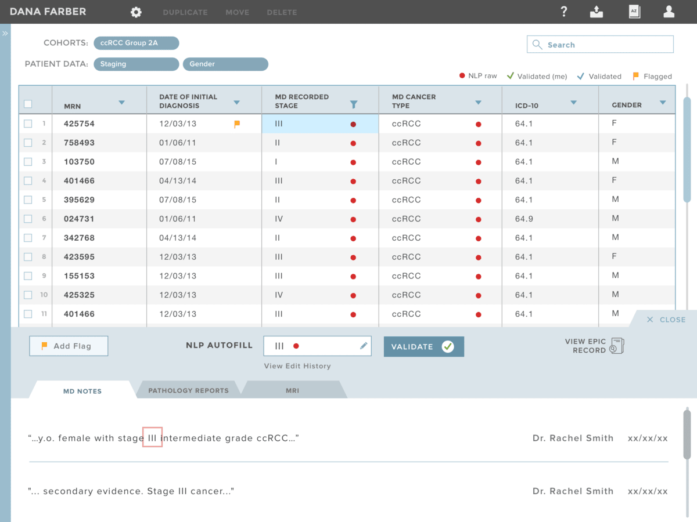

Research & Discovery
|| Background
As a capstone project for UXDI, we partnered with real clients to help them solve real world problems. I worked on a team of three designers, and I was elected team leader because of my organizational skills and healthcare experience.
We worked with Dana Farber Cancer Institute, a premier cancer research and treatment center in Boston. Currently, much of their data is unstructured. Converting unstructured data to structured data is manual and could be managed in an improved workflow. They have proposed creating a new database for curating data by leveraging natural language processing.
|| Stakeholder & User Research
We began our research with stakeholder interviews. This gave us a better understanding of the stakeholder needs were, as well as a clear picture of their current system. Once we knew where the new database would slot into the system, we could identify users to research.
For our user research, we spoke to data curators at a range of levels who currently manage and abstract patient data. We spoke to two clinical research coordinators, one data manager, and a one health informatics analyst. We probed on their current workflow and typical tasks, pain points, and the pro's and con's of the current applications they use. Additionally, we asked if there were any other apps, even outside of healthcare, that they liked using. We wanted to learn what type of flows and patterns our users would be comfortable with.
We learned of data curators' daily frustrations. One curator told us:
"The most valuable thing that could happen for me is if all manual abstractions don’t go off into a black hole, but are actually utilized."
{kind=link}
From our stakeholder and user interviews, we created an affinity map and pulled out the following i-statements:
- I find the current workflow to be labor-intensive and inefficient
- I struggle with the large number of data gaps
- I need the necessary context in order to validate data
- I need an easy-to-use centralized systemthat can advance our needs
- I want the app to be customizable
|| Competitor Analysis
Now that we understood the problems users and stakeholders were facing, we moved on to a competitor analysis. We analyzed other interfaces that organize and manage large data sets. There were three main interfaces we analyzed: Alation, Lancaster, and Tableau. We drew out the positive design aspects on each interface, which included
- Modular design
- Ample white space
- Effective use of color
- Contextual symbols and icons
- Native tool-tips
- Pills providing context
{kind=link}
In addition to look at what asethetically was attractive, we wanted to leverage functions from other software that users liked and were comfortable using. Particularly, Excel and it's sort and filter feature. Users were already using it to analyze data in their current workflow, so we wanted to bring this function forward into our design, as well.
Ideation & Synthesis
|| Problem & Solution Statement
With the base of our research complete, we were able to define the problem statement:
As a data curator, I need a system that will let me efficiently capture and validate data, so that patient data can be effectively abstracted for the benefit fo medical research.
We then thought about how we would solve this problem with our design, and wrote a solution statement:
POD is the data abstraction tool which leverages natural language processing and allows data curators to easily capture and validate data in a centralized database.
|| Persona
Using the research from our interviews, we created a persona, Danielle, to help us frame our thinking and designs.

|| Storyboard
Thinking about our problem and solution statement, we thought more deeply about Danielle and the daily problems she may face. We created a storyboard to reflect her improved workflow with POD.
{kind=link}
{kind=link}
{kind=link}
{kind=link}
|| User Flow
With these exercise completed, a user flow was mapped out.

|| Feature Prioritization
Now that we understood Danielle's problem and had considered how her new workflow could fit together, it was time to start mapping out the actual features we would want to include in our design. I took the lead on this part of the process. I organized the features into three categories, beginning with those features that were "Must Haves." Without these features, the product would not be viable. I then continued to list and organize features that were "Should Haves" and "Could Haves"
{kind=link}
|| Design Goals
Before jumping right into sketching, we decided on design goals and created a corresponding mood board to dictate the feel and direction we wanted follow. Our design goals were to have:
- Clean and refined aesthetic
- Intuitive informational hierarchy
- Clear visual IDs utilizing color and symbols
{kind=link}
|| Ideation & Sketching
We were now ready to start sketching. Each of us sketched out our initial ideas, exploring different interactive components including:
- Tabular
- Drag and drop
- Fluid systems
- Faceted navigation
{kind=link}
Next we consolidated the best components from each of our designs into one composition.
As we were refining the layout, we utilized the large whiteboard space so we could quickly iterate, constructively critique, and update the model.
{kind=link}
{kind=link}
Rapid Prototyping & Testing
|| Paper Prototype
The model we drew on the whiteboard was converted into a working paper prototype so that we could test with users and what was and was not working in our design. We tested the paper prototype with four users.
As context for the paper model below, the side panel gave users access to select which patient cohorts and patient data sets they wanted to view in the center staging area. The center staging area reiterated what type of data the user was viewing, and included the associated actual columns and data points. We received great feedback on the intuitive side panel, which reminded users of ecommerce, as well as some areas of improvement.
{kind=link}
The below view of our paper panel shows the natural language processing (NLP) validation panel. We asked users which cells they thought held the NLP-suggested data, and then asked them to view the associated context and validate the data. Users liked the context, but wanted additional options for editing the data point and flagging the item.

We incorporated the user feedback and iterated on our design, creating two high fidelity versions to test with users.
|| High-Fidelity Prototypes
The team came up with two design directions that could solve users needs. We tested Version A and Version with four users. Half of the users saw Version A first, and half saw Version B first. This way, when we compared user preference, there was no bias based on the order the participants saw the designs.
Below are screenshots noting some of the differences between Version A and Version B. To test the flow of the versions yourself, you can view the interactive prototypes: Version A and Version B.
Selecting Data: Top Navigation vs. Side Panel
{kind=link}
{kind=link}
Validation Panel
{kind=link}
Version B
{kind=link}
Moving Patients: Hover State vs. Activated Top Buttons
{kind=link}
{kind=link}
After all of our users and stakeholders were tested, we found that a majority favored Version B aesthetically, and found Version B's functionality more intuitive.
Some of the preferred functionality in Version B included:
- Simpler data selection
- Legend clarifying data sources
- Fewer clicks to move patients to a different cohort
There was still room for improvement. We wanted to focus our attention on:
- ADA compliance
- Clarify label verbiage
- Revise filter dropdown
- Refine worflow for editing cohorts and creating custom patient data fields
- Update edit in validation panel to a closed set of options

{kind=link}
{kind=link}
{kind=link}